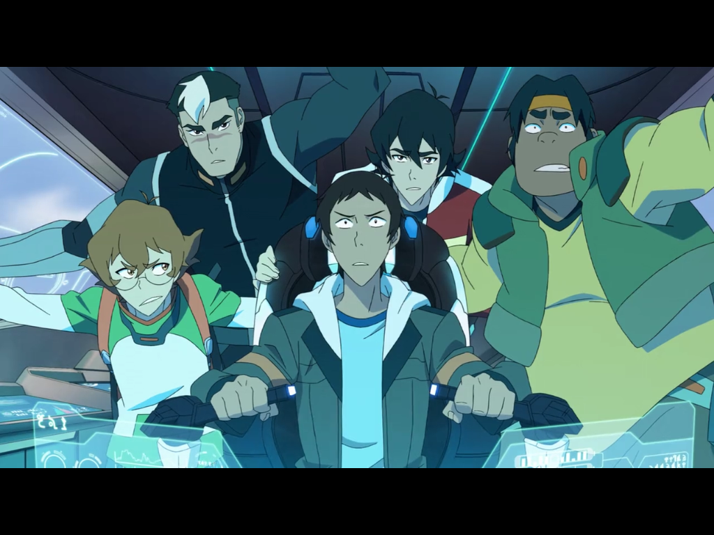
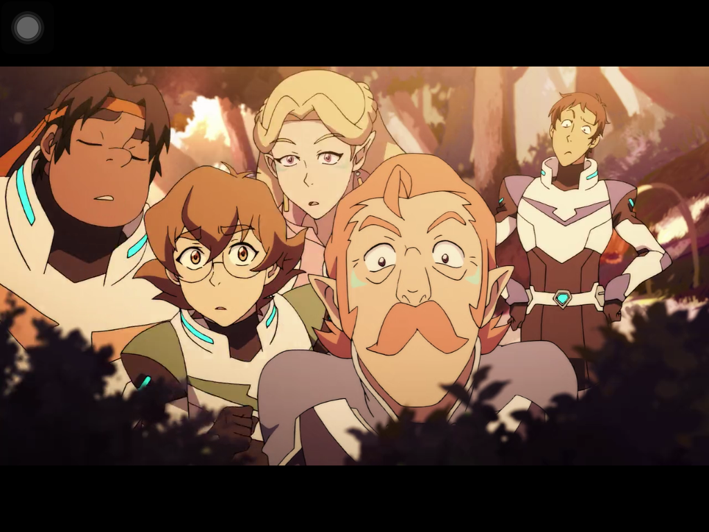
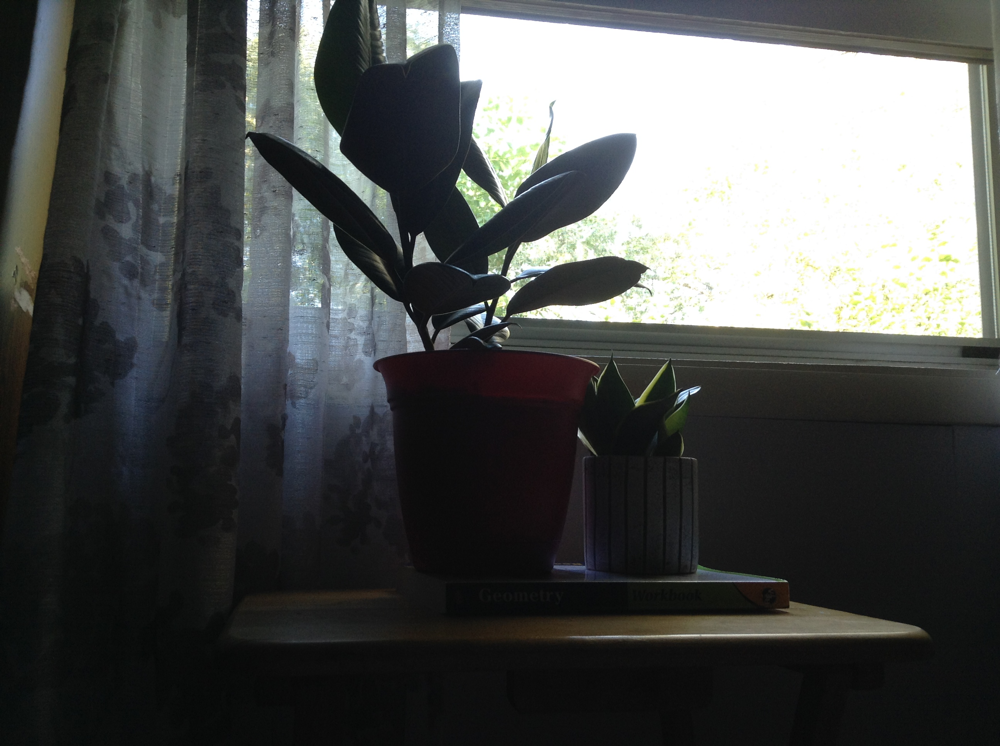
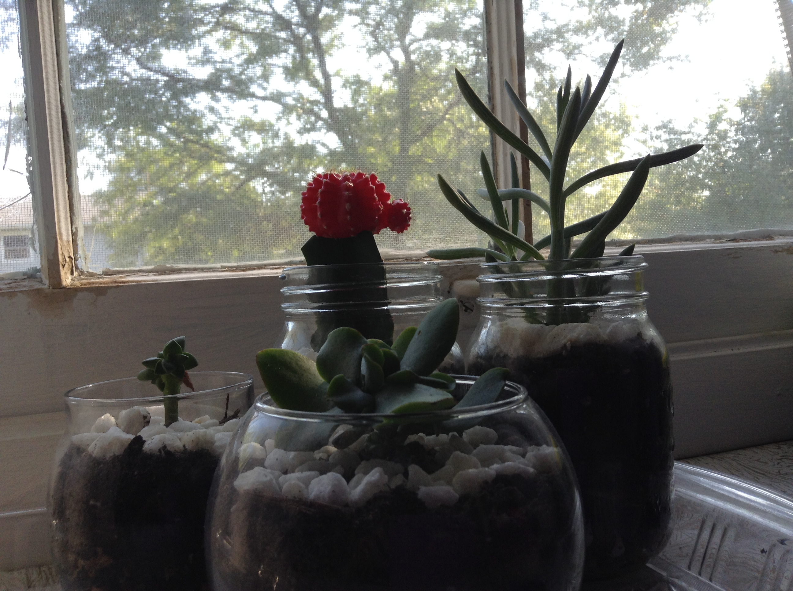
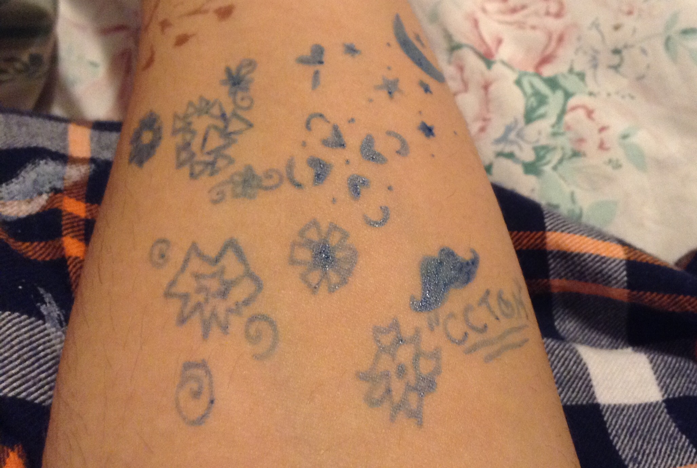
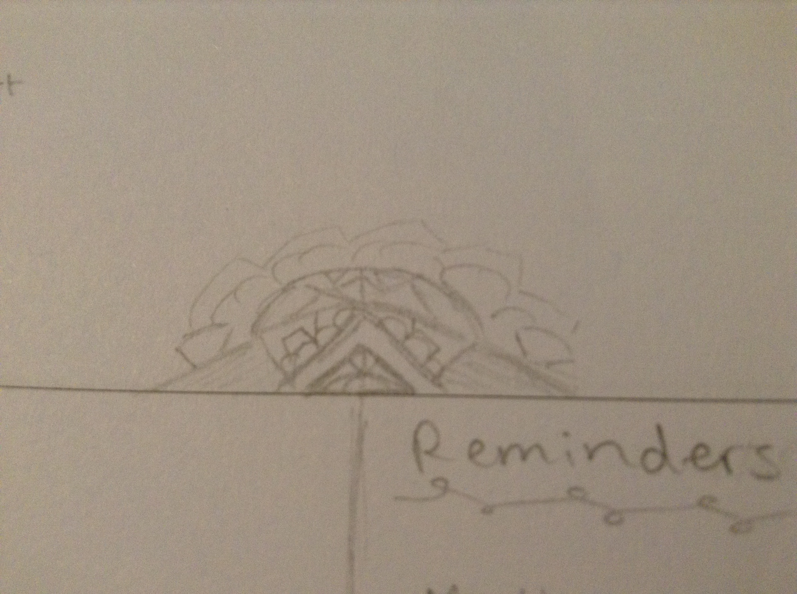
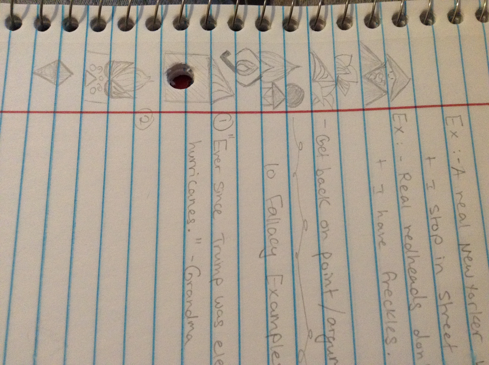

There are a whole bunch of things that I'm currently into or
just generally like. One of these things is cats!! Cats are
awesome balls of floof that have some serious attitude problems
but are still great companions nonetheless which is why my family and I took
in two stray kittens. Unfortunately, one ran away (The male kitten. It's
usually the male.) on a secret mission and we still haven't heard back
from him yet. Here are a bunch more things that I'm into.


Voltron!! I don't usually get drawn into or hooked on shows too
easily but this show has totally been out of this world. (Literally.) The
characters are amusing and touching and the plot is great so I highly
recommend it. I don't know how else to describe it besides saying
that it's about a group of seven beings (five humans and two Alteans)
who protect the universe from evil beings. That's obviously the watered
down version because it's so much better and interesting than that. Check out
this website to learn more about Voltron.


My plants are like my family. They provide my house with beauty,
clean air, and are cool companions. My favorite ones are succulents,
rubber plants, snake plants, and peperomia. They're quite easy to care
for because they aren't such high maintenance types like some other plants.
This is good because I'm fairly inexperienced when it comes to plants.



Doodling is something I end up doing with or without thinking. This happens
so frequently, doodles end up across most if not all of my papers at some
point or other. They range from cute animals or geometric shapes to random
designs formed from multiple intersecting lines and shading with a few smaller
shapes tossed in.